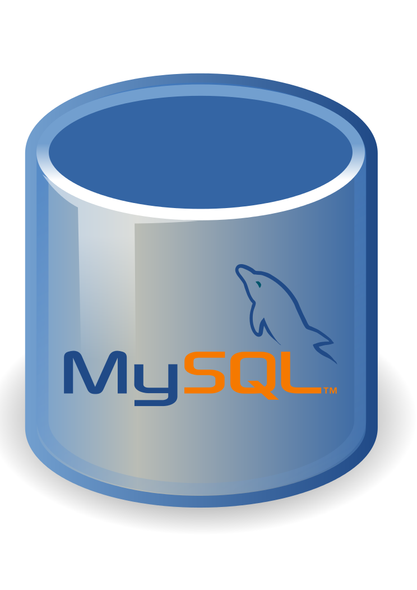

Herramientas y lenguajes con los que trabajo de forma habitual.
Mantengo la agrupación de mi CV (lenguajes, frameworks, bases de datos,
automatización, DevOps, control de versiones y testing) y añado en cada
tarjeta el contexto en el que los he aplicado. Para quien evalúa el
perfil: cada bloque describe mi nivel real de autonomía, no una simple
lista de palabras clave.
Lenguajes de programación
JavaScript y TypeScript son mi base tanto en backend como en
frontend; uso el tipado estático de TypeScript para modelar el
dominio y detectar errores antes de ejecutar. Python lo utilizo para
modelos de datos e IA, y R para análisis estadístico.
Dónde lo he aplicado
API de las prácticas en JavaScript/TypeScript, modelo predictivo de
burnout en Python y microservicios de Auscultify combinando Python y
JavaScript.
Frameworks y tecnologías
Construyo APIs REST con Node.js y Express.js, e interfaces con React
y Next.js (renderizado en servidor y rutas dinámicas). Spark lo
utilizo para procesamiento distribuido sobre varios nodos.
Dónde lo he aplicado
Frontend del mapa interactivo del campus en Next.js y React, API en
Node.js + Express.js durante las prácticas, y despliegue de un
modelo sobre un clúster de nodos con Spark en el Predictor de
burnout.
Bases de datos


En SQL modelo esquemas relacionales, escribo consultas y cuido los
índices (MySQL y PostgreSQL). Con la extensión PostGIS trabajo
consultas espaciales sobre datos geográficos.
Dónde lo he aplicado
Almacenamiento y consulta espacial de ~3.000 filas cada 2 minutos
en PostgreSQL/PostGIS durante las prácticas; MySQL como base de
datos de Tokimori.
Automatización de procesos
Diseño flujos en n8n para conectar servicios, APIs y bases de datos
y para lanzar procesos de ingesta programados sin necesidad de
escribir y mantener un servicio dedicado. Es la pieza que mantiene
los datos frescos de forma desatendida.
Dónde lo he aplicado
Pipeline de telemetría geoespacial del campus: ingesta automatizada
cada 2 minutos hacia PostGIS.
DevOps y despliegue
Contenerizo aplicaciones con Docker e imágenes reproducibles,
orquesto varios servicios en local con docker-compose y preparo
entornos idénticos en desarrollo y despliegue para eliminar el
«en mi máquina funciona». Sirvo las aplicaciones detrás de Nginx
como servidor web y proxy inverso.
Dónde lo he aplicado
Despliegue en Docker de la aplicación desarrollada en las prácticas
y publicación con Nginx de la página de las prácticas de empresa
extracurriculares; este mismo portfolio incluye Dockerfile y
docker-compose.
Control de versiones
Uso Git en flujo colaborativo: ramas por funcionalidad, revisión de
cambios, resolución de conflictos y un historial de commits legible.
Es la base sobre la que coordino el trabajo cuando el proyecto es de
varias personas.
Dónde lo he aplicado
Todos mis proyectos; coordinación del reparto backend/frontend con
el equipo en las prácticas y en el Trabajo de Fin de Grado.
Testing
Escribo tests automáticos en JavaScript con Jest, tanto para APIs de
Node.js (casos unitarios y pruebas de integración sobre los
endpoints) como para interfaces de React con React Testing Library
(render de componentes e interacción del usuario). El objetivo es
que un fallo se detecte en cuanto se introduce y no en cliente.
Dónde lo he aplicado
Pruebas de la API en Node.js y de la interfaz en React durante las
prácticas (entorno profesional), y tests de la lógica de Tokimori
como proyecto personal.
Pruebas de software durante el Grado
En el Grado en Ingeniería Informática practiqué la verificación de
software sobre varias tecnologías: tests unitarios con JUnit sobre
código Java, pruebas de servicios en Spring, pruebas de componentes
en Angular y validación de operaciones sobre bases de datos MongoDB
y Cassandra. Aquí aprendí a decidir qué hay que probar y a usar la
cobertura de código como criterio de calidad.
Dónde lo he aplicado
Solo en asignaturas del Grado en Ingeniería Informática (Universidad
de Almería); todavía no lo he trasladado a un entorno profesional.